RAŠTO DARBO RENGIMAS
Automatinio turinio įterpimas
1 žingsnis iš 27
Pasirenkame dokumento vietą, kurioje norime įterpti turinį
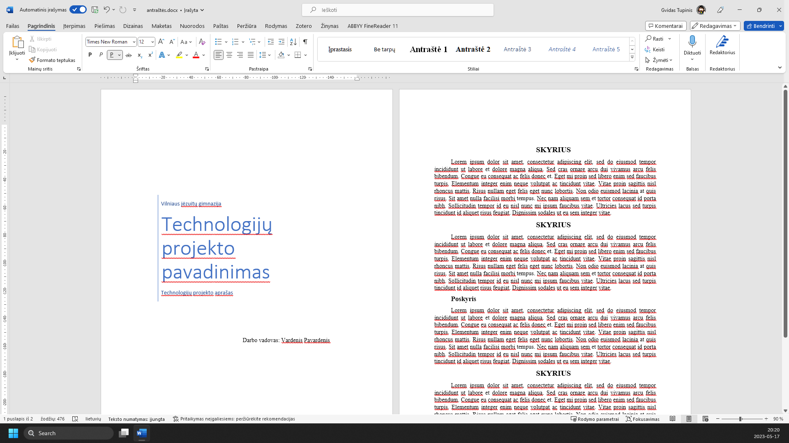
Pasirenkame meniu ‘Nuorodos’
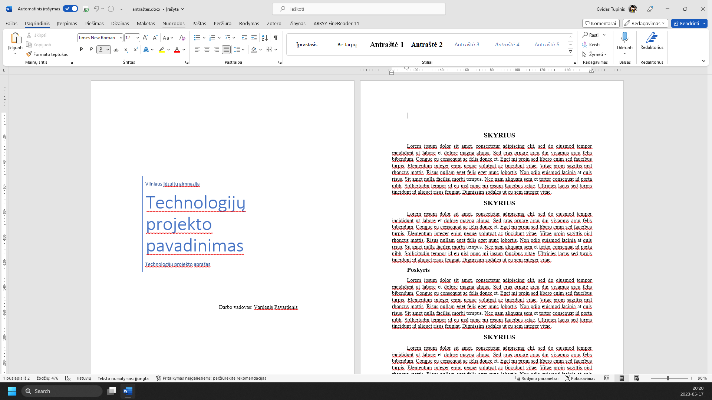
Įrankiu juostoje pasirenkame ‘Turinys’
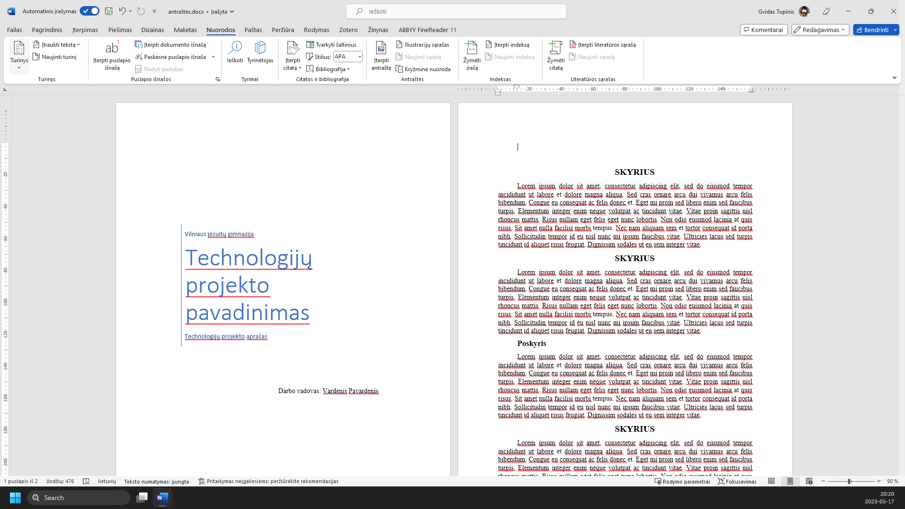
Čia galime pasirinkti automatinius iš anksto sumaketuotus turinio variantus, tačiau panagrinėkime plačiau: Spaudžiame ‘Pasirinktinis turinys...’
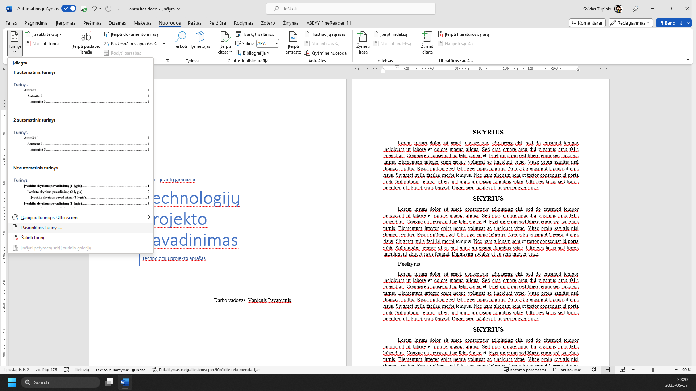
Atsidariusiame meniu galime keisti įvairius turinio parametrus, pvz., kokie simboliai bus naudojami tarpuose tarp skyrių ir puslapio numerių. Pasirenkame meniu ‘Tabuliacijos pradžia:’
Čia pasirenkame ‘.......’
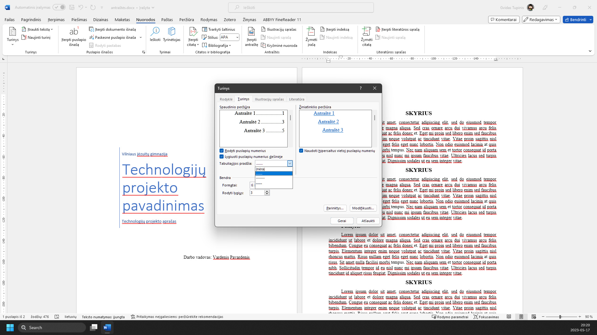
Automatinis turinys yra kuriamas pagal dokumente naudojamus stilius. Maniu ‘Parinktys...’ galime redaguoti, kokie stiliai bus įtraukti į turinį
Skaičius reiškia turinio lygį. Skaičius 1 reiškia, kad tai yra skyrius, 2 – poskyris, 3 – dar mažesnis skyrelis ir t.t. Pakoregavę nustatymus, spaudžiame mygtuką ‘Gerai’
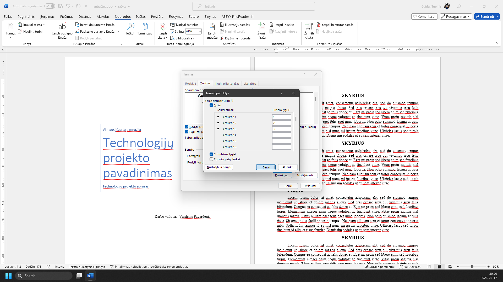
Kaip atrodys meniu, galime redaguoti meniu ‘Modifikuoti...’
Čia galime pasirinkti skirtingus turinio lygius ir kaip jie atrodys. Tai galime daryti spustelėję meniu ‘Modifikuoti...’
Atlik veiksmą ekrano nuotraukoje pažymėtoje vietoje.
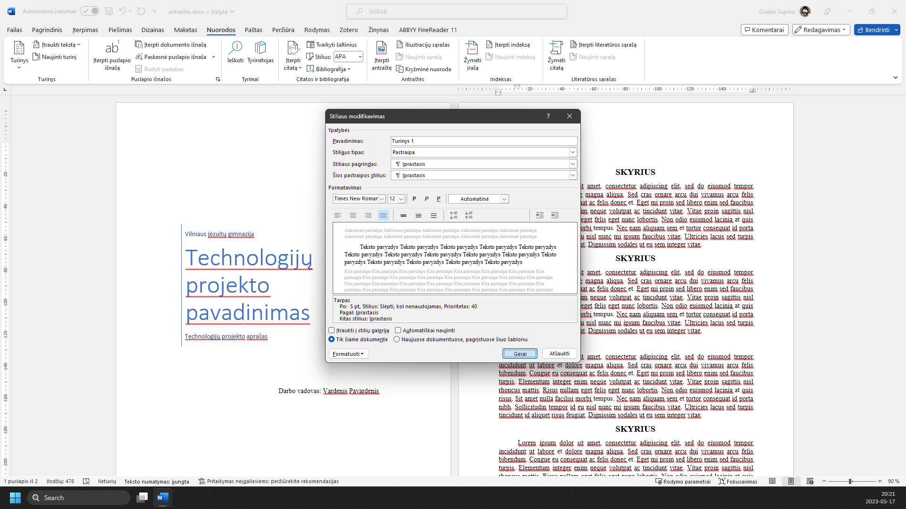
Atlikę visas modifikacijas, spaudžiame mygtuką ‘Gerai’
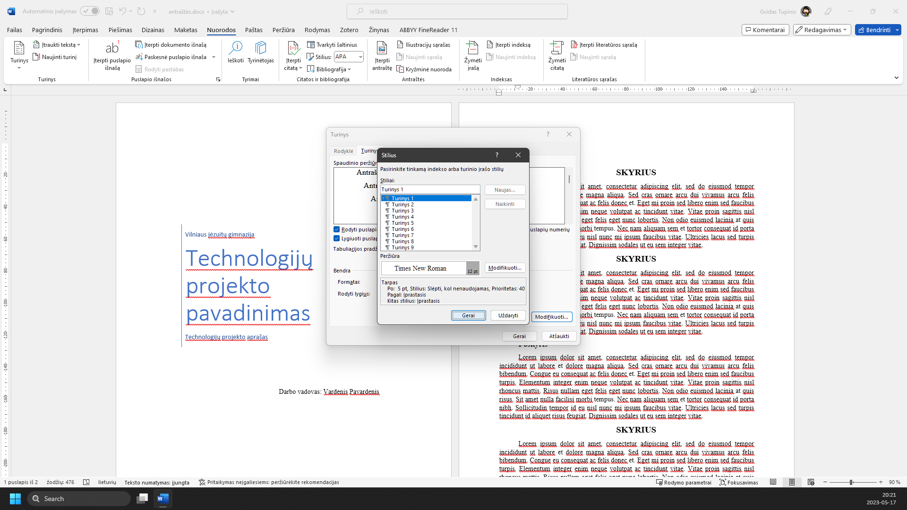
Spaudžiame ‘Gerai’
Turinys sėkmingai įterptas. Norėdami jį atnaujinti (kai atliekame pakeitimus dokumente), spaudžiame mygtuką ‘Naujinti turinį...’
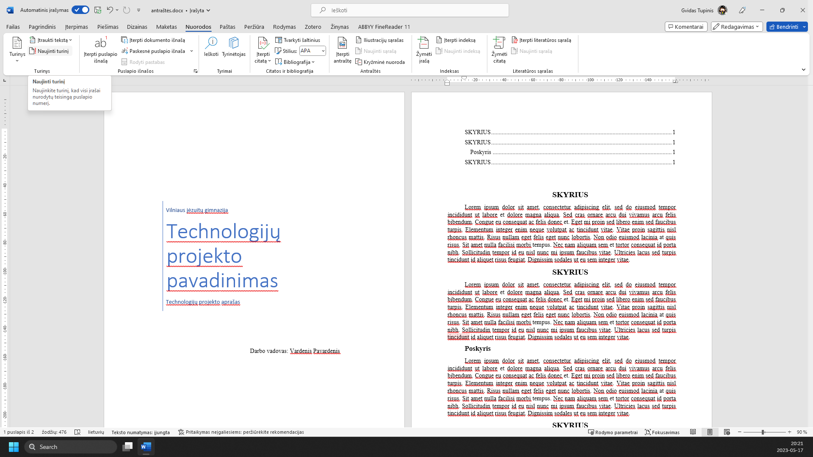
Pasirenkame ‘Naujinti visą turinį’
Ir spaudžiame mygtuką ‘Gerai’
Tą patį galime padaryti ir kitaip. Dešiniu pelės klavišu spustelime turinį
Pasirenkame ‘Naujinti lauką’
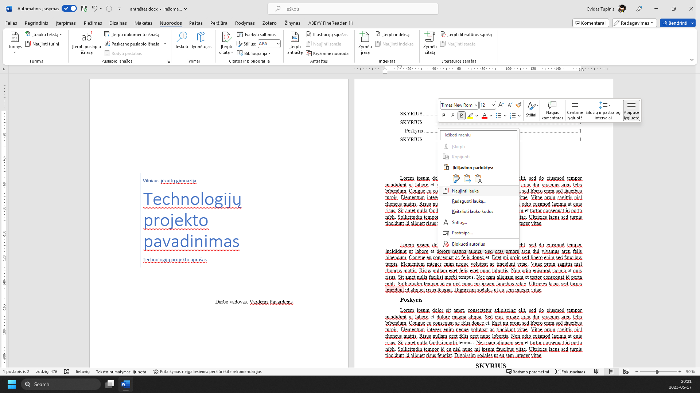
Pasirenkame ‘Naujinti visą turinį’
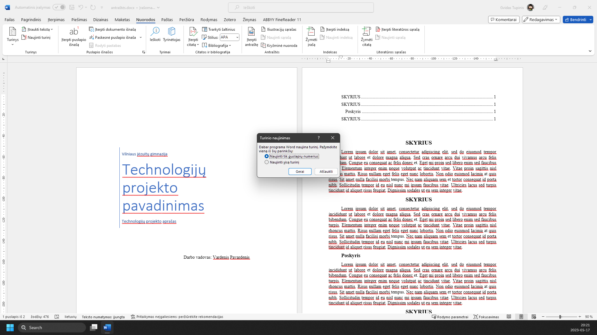
Ir spaudžiame mygtuką ‘Gerai’
Turinys sėkmingai atnaujintas
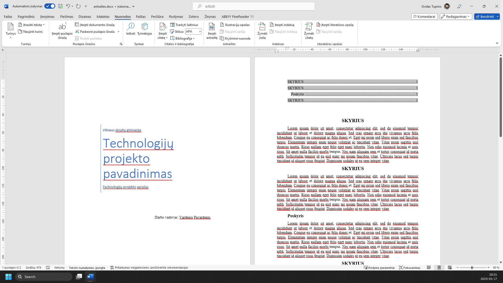
Jei atliekame kokius nors pakeitimus savo dokumente
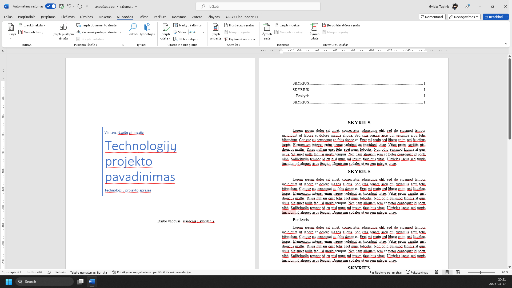
Turinys automatiškai neatsinaujina. Tai reikės padaryti rankiniu būdu
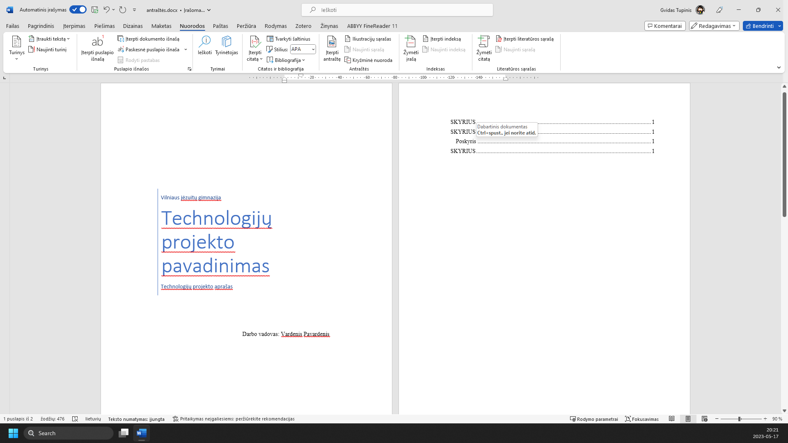
Atlik veiksmą ekrano nuotraukoje pažymėtoje vietoje.
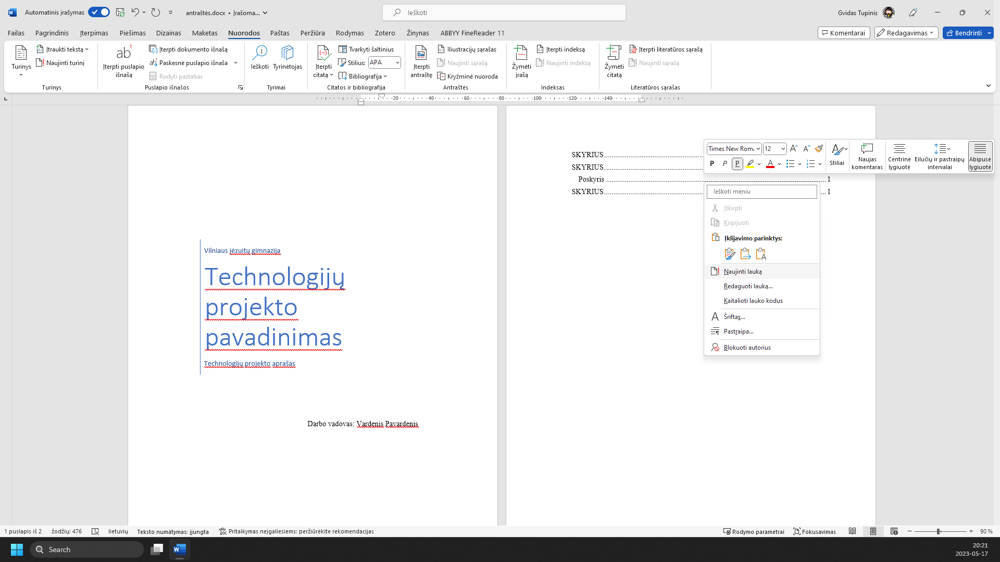
Atlik veiksmą ekrano nuotraukoje pažymėtoje vietoje.
Atlik veiksmą ekrano nuotraukoje pažymėtoje vietoje.
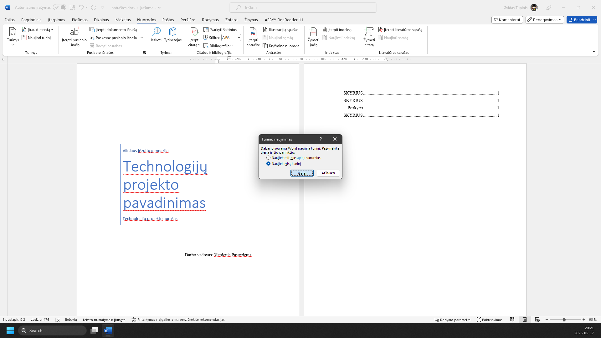
Turinys sėkmingai atnaujintas
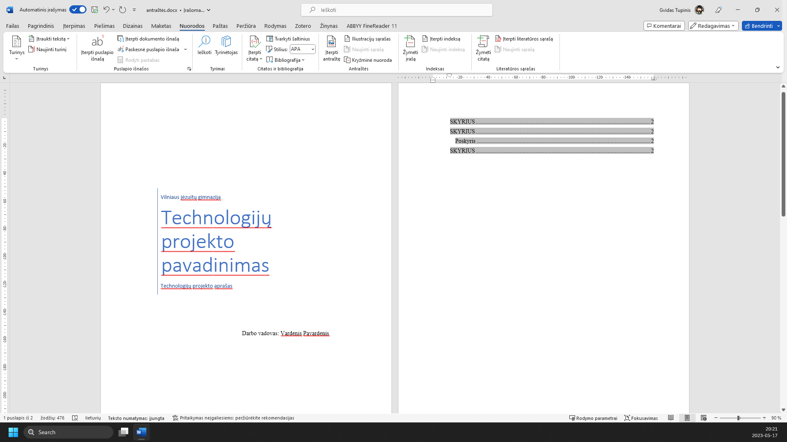
Žaliai apibrėžta vieta rodo, kur paspausti. Vaizdą gali padidinti naršyklės mastelio valdikliu. Žingsnius taip pat keičia klaviatūros rodyklės.